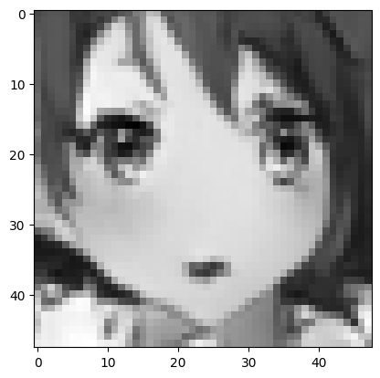

Diffusion Model
2023-10-11
DPM and DDPM


Diffusion model (嘴砲)

- Fix T\in \mathbb N large.
- We add independent normal distributions (noise) step by step.
- We call this the forward process.
- X_T is basically a noise.
- We can obtain an approximation of q(x_0) by recovering q(x_{t-1}\vert x_t).
- We will not recover q(x_0) directly from x_T because this is too difficult.
- How to define the forward process of the diffusion model?
Define the forward process by adding independent noise
- Fix the follows:
- T\in \mathbb N large;
- \lbrace \alpha_1,\cdots,\alpha_T \rbrace\subset (0.001,0.999);
- \beta_t = 1-\alpha_t (the intensity of noise added).
- Let X_0,\varepsilon_1,\cdots, \varepsilon_T be independent random variables with \begin{aligned} X_0 \sim q(x_0), \quad \varepsilon_t \sim \mathcal{N}(\mathbf{0},\mathbf{I}). \end{aligned}
- For t=1,\cdots,T, let \begin{aligned} X_{t}= \sqrt{\alpha_t} X_{t-1} + \sqrt{\beta_t} \varepsilon_t. \end{aligned}
- Note that in this definition, \begin{aligned} q(x_{t}\vert x_{t-1:0}) = q(x_t \vert x_{t-1}). \end{aligned} Hence, \lbrace X_0,X_1,\cdots,X_T\rbrace is a Markov chain.
- We often use an equivalent definition to define the forward process.
Forward process
- We define the forward process as a Markov chain X_0,\cdots,X_T with
- the initial density q(x_0), and
- the transition density \begin{aligned} q(x_t\vert x_{t-1}) = \mathcal{N} (\sqrt{\alpha_t}x_{t-1},\beta_t \mathbf{I}). \end{aligned}
- The joint density of (X_T, X_{T-1},\cdots, X_1, X_0) for the forward process (or {\color{red}{\text{we say under }q}}) is \begin{aligned} q(x_{T:0}) = q(x_T\vert x_{T-1}) \cdot q(x_{T-1}\vert x_{T-2}) \cdots q(x_{1}\vert x_0) \cdot q(x_0). \end{aligned}
- Let \varepsilon_t such that \begin{aligned} X_t = \sqrt{ \alpha_t } X_{t-1} + \sqrt{\beta_t} \varepsilon_t. \end{aligned} Then \underline{\varepsilon_t\sim \mathcal{N}(\mathbf{0},\mathbf{I})} and \underline{X_0,\varepsilon_1,\varepsilon_2,\cdots,\varepsilon_t\text{ are independent under }q.}
- Under q, X_t can be written as \begin{aligned} X_t = \sqrt{\overline{\alpha}_t }X_0 + \sqrt{1-\overline{\alpha}_t} \overline{\varepsilon}_t \end{aligned} with \underline{\overline{\varepsilon}_t\perp X_0}, \underline{\overline{\varepsilon}_t\sim \mathcal{N}(\mathbf{0},\mathbf{I})}, and \overline{\alpha}_t = \alpha_t\cdots \alpha_1.
- Under q, X_T converge to \mathcal{N}(\mathbf{0},\mathbf{I}) for T large.

Goal
- The main purpose of the diffusion model is to learn a distribution p_{\theta}(x_0) such that p_{\theta}(x_0)\approx q(x_0).
- One way is to minimize D_{\mathtt{KL}}(q(x_0) \,\Vert\, p_{\theta}(x_0)).
- Our goal becomes to find \begin{aligned} \mu_{\theta}^*, \Sigma_{\theta}^* &= \arg \min_{\mu_{\theta},\Sigma_{\theta}} D_{\mathtt{KL}} \bigl( q(x_0) \big\Vert p_{\theta}(x_0) \bigr) \cr &= \arg \min_{\mu_\theta,\Sigma_\theta} \biggl( -\int q(x_0) \log \Bigl( \frac{p_{\theta}(x_0)}{q(x_0)} \Bigr) \mathrm{d}x_0 \biggr) \cr &= \arg \min_{\mu_{\theta},\Sigma_{\theta}} \biggl( \underbrace{-\int q(x_0) \log p_{\theta}(x_0) \mathrm{d}x_0}_{\color{blue}{\mathbb E_{X_0\sim q(x_0)}[-\log p_{\theta}(X_0)]}} \biggr). \end{aligned}
- By the evidence lower bound(ELBO), \begin{aligned} -\log p_{\theta}(x_0) \leq \mathbb E_{X_{1:T}\sim q(x_{1:T} \vert x_0)} \Bigl[ -\log \frac{p_{\theta}(x_0,X_{1:T})}{q(X_{1:T}\vert x_0)} \Bigr]. \end{aligned} Hence, \begin{aligned} {\color{blue}{\mathbb E_{X_0\sim q(x_0)}[-\log p_{\theta}(X_0)]}} \leq \mathbb E_{X_{0:T}\sim q(x_{0:T})} \Bigl[ -\log \frac{p_{\theta}(X_{0:T})}{q(X_{1:T}\vert X_0)} \Bigr]:= L. \end{aligned}
- Our goal becomes to minimize L.

- Note that \begin{aligned} L &= \mathbb E_{X_0\sim q(x_0)} \biggl[ D_{\mathtt{KL}} \Bigl( \underline{q(x_T \vert x_0)} \big\Vert \underline{p(x_T)} \Bigr) \Big\vert_{x_0=X_0} \biggr] \cr & \qquad + \sum_{t=2}^T \underbrace{\mathbb E_{X_0,X_t\sim q(x_0,x_{t})} \biggl[ D_{\mathtt{KL}} \Bigl( {\underline{\color{red}{q(x_{t-1} \vert x_t,x_0)}}} \big\Vert \underline{\color{blue}{p_{\theta}(x_{t-1}\vert x_t)} } \Bigr)\Big \vert_{x_0,x_t=X_0,X_t} \biggr]}_{L_{t-1}} \cr & \qquad \qquad + \underbrace{\mathbb E_{X_0,X_1\sim q(x_0,x_1)} \biggl[ -\log {\color{blue}{p_{\theta}(x_0 \vert x_1)}} \Big\vert_{x_0,x_1=X_0,X_1} \biggr]}_{L_0}. \end{aligned}
- To minimize L \iff To minimize L_{t-1},t=1,\cdots,T.
- We focus on t\geq 2.
- By Bayes rule and after a long calculation, \begin{aligned} q(x_{t-1} \vert x_t,x_0) = \mathcal{N}\bigl( x_{t-1}; \mu_{t}(x_t,x_0),\Sigma_t \bigr), \quad t = 2,\cdots,T, \end{aligned} where \begin{aligned} \mu_{t}(x_t,x_0) = \frac{\sqrt{\overline{\alpha}_{t-1}}\beta_t}{1-\overline{\alpha}_t}x_0 + \frac{\sqrt{\alpha_t}(1-\overline{\alpha}_t)}{1-\overline{\alpha}_t}x_t , \quad \Sigma_t = \frac{1-\overline{\alpha}_{t-1}}{1-\overline{\alpha}_t}\beta_t. \end{aligned}
Sampling mnist
mnist

fashion_mnist


Sampling anime face 1


Sampling anime face 2
Data
Sample, reverse process and estimate x_0



face 1

face 2
Only train one epoch on face 2
Use the model trained on face 1 and train it one epoch on face 2

DDPM 後續發展
Improved DDPM
- Recall that p_{\theta}(x_{t-1}\vert x_t) = \mathcal{N}(x_{t-1};\mu_{\theta}(x_t,t),\Sigma_{\theta}(x_t,t)).
- DDPM 直接取 \Sigma_{\theta}(x_t,t)=\sigma_t^2 \mathbf{I}.
- Improved DDPM 將 \Sigma_{\theta}(x_t,t) 令成可學習的參數.
- \beta schedule
- 衍生出 Diffusion Models Beat GANs on Image Synthesis, GLIDE, DALL·E.

Diffusion Models Beat GANs on Image Synthesis
- Adapted group normalization
- classifier guidance
- 加速採樣
- 衍生出 classifier-free guidance
- used in GLIDE, DALL·E.
DALL·E
ㄹn expressive oil painting of a basketball player dunking, depicted as an explosion of a nebula.


Reference
Anderson, Brian D. O. 1982. Reverse-Time Diffusion Equation Models. Stochastic Processes and Their Applications 12 (3): 31326. https://doi.org/https://doi.org/10.1016/0304-4149(82)90051-5.
Ho, Jonathan, Ajay Jain, and Pieter Abbeel. 2020. Denoising Diffusion Probabilistic Models. Advances in Neural Information Processing Systems 33: 684051.
Sohl-Dickstein, Jascha, Eric Weiss, Niru Maheswaranathan, and Surya Ganguli. 2015. Deep Unsupervised Learning Using Nonequilibrium Thermodynamics. In Proceedings of the 32nd International Conference on Machine Learning, edited by Francis Bach and David Blei, 37:225665. Proceedings of Machine Learning Research. Lille, France: PMLR. https://proceedings.mlr.press/v37/sohl-dickstein15.html.
Song, Yang, Jascha Sohl-Dickstein, Diederik P Kingma, Abhishek Kumar, Stefano Ermon, and Ben Poole. 2021. Score-Based Generative Modeling Through Stochastic Differential Equations. In International Conference on Learning Representations. https://openreview.net/forum?id=PxTIG12RRHS.